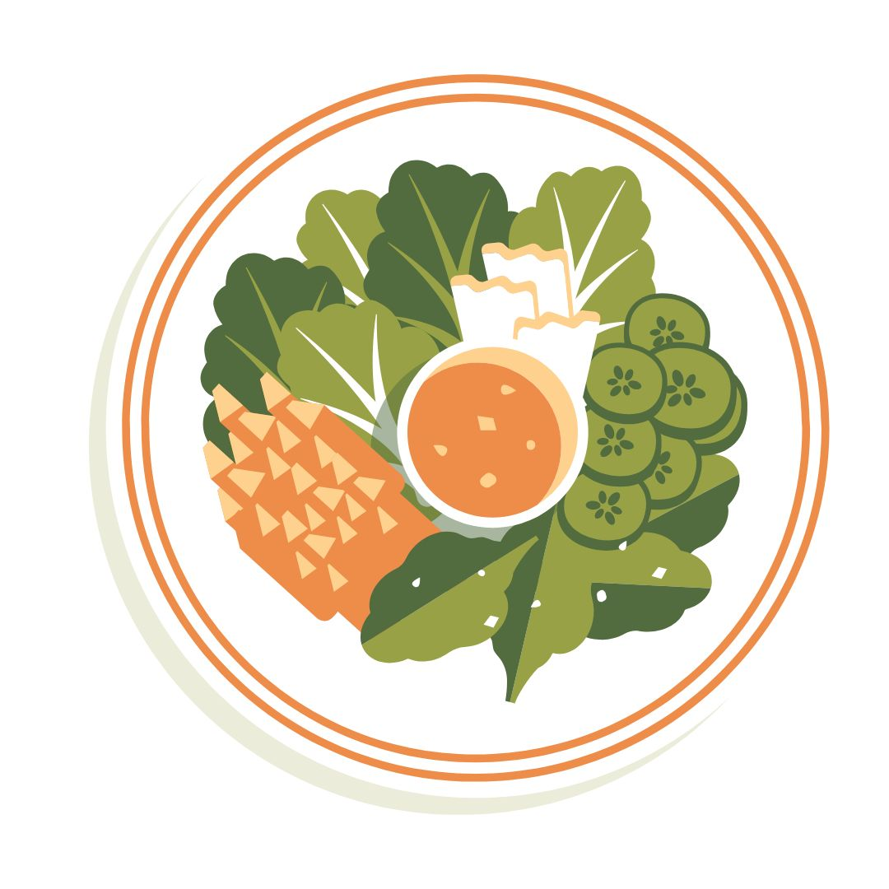
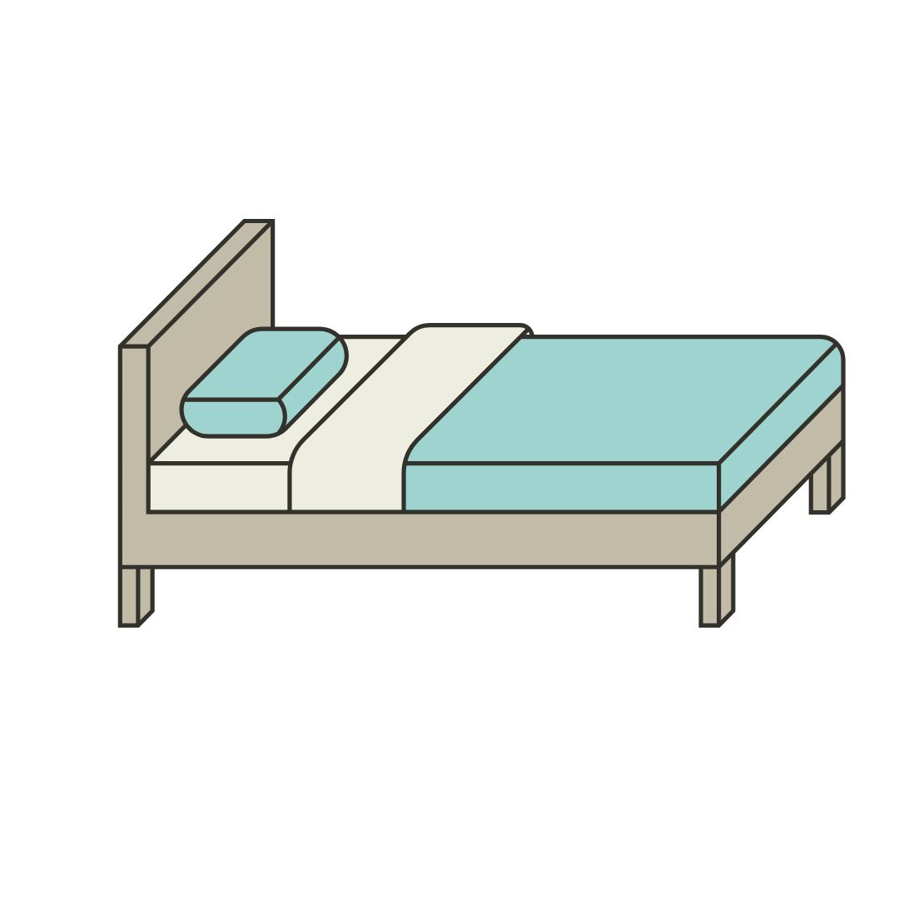
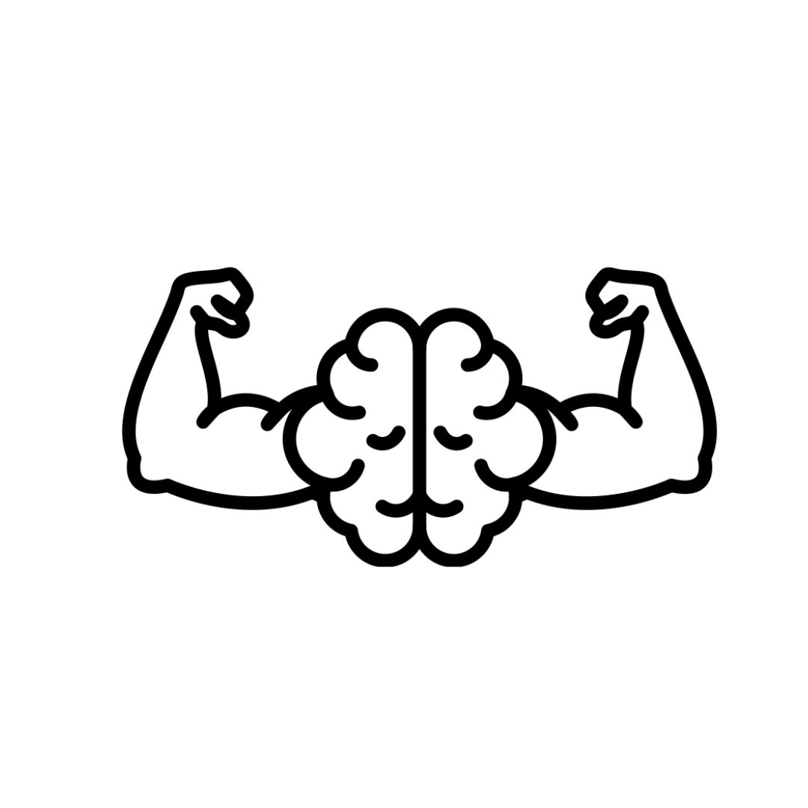

WORKOUT TIPS
WORKOUT TIPS
- Start small and stay consistent – 3–5 workouts per week is a great goal.
- Focus on form over weight to avoid injuries.
- Include both strength and cardio in your routine.
- Don’t skip warm-ups and cool-downs – they help prevent soreness and injury.
- Track your progress to stay motivated.

NUTRITION TIPS
- Eat balanced meals with protein, carbs, and healthy fats.
- Drink plenty of water throughout the day (at least 2–3 liters).
- Avoid processed foods and sugary drinks as much as possible.
- Don’t skip meals – especially breakfast.
- Prepare meals in advance to stay on track with your diet.

RECOVERY TIPS
- Get enough sleep (7–9 hours) to allow your body to recover.
- Incorporate rest days into your routine.
- Use foam rollers or massage to relieve muscle soreness.
- Stay hydrated to help with recovery.
- Listen to your body – if you’re in pain, take a break.

MOTIVATION & MINDSET
- Set realistic goals and celebrate small victories.
- Find a workout buddy to keep you accountable.
- Mix up your routine to keep things interesting.
- Visualize your success and stay positive.
- Remember why you started and keep pushing forward.
 EXTRA TIPS
EXTRA TIPS